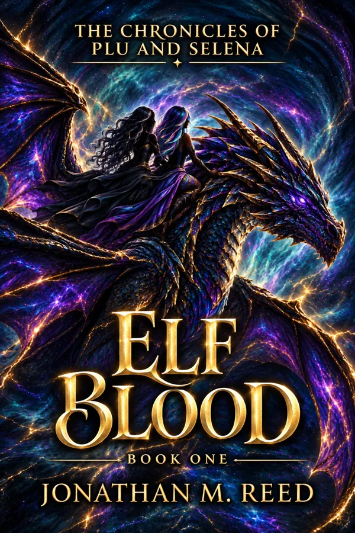
MAIN TRILOGY · BOOK ONE
Elf Blood
An elf without her memories, an unusual household, and events that unsettle a carefully separated world.
THE OFFICIAL BOOK SERIES · JONATHAN M. REED
One fractured world. Two creators. A thousand lives bound together.
Discover the story ↓WELCOME, NEW READER
You do not need to know the history, the characters, or the magic yet. Choose the path that feels right.
Reading safely: The site opens in New Reader mode. You can explore without deliberately revealing later-book details.

A FREE GIFT FOR READERS
Explore 27 chapters of creatures, peoples, magic and stories, narrated by Plu. All 27 chapters are free to read immediately, with no signup, account, or payment required.
No payment, signup, or account is required to read the handbook.WELCOME TO THE CHRONICLES
When an elf with no memory of her past makes a home with a fiercely loyal vampire, their quiet life seems far removed from the powers that shaped the world. But an unexpected arrival, a human agent's investigation and strange pulses of magic begin to disturb a reality that was never meant to be whole.
Across the trilogy, Elf Blood, The World Before and The Goddess Elf trace the mystery from its first fractures to the choices that will determine the world's future. The companion stories follow the people who live on in its aftermath and the quieter moments that hold their family together.
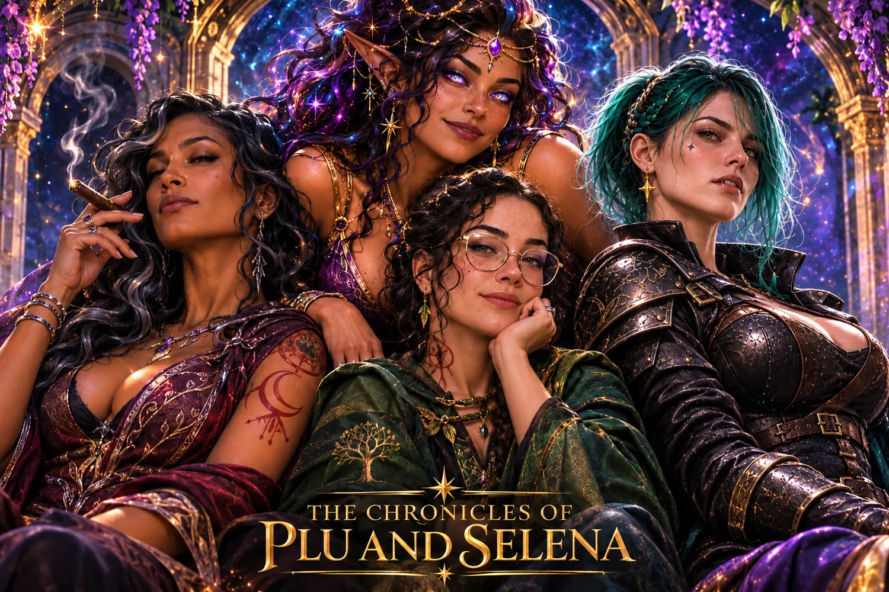
A FEW FACES YOU’LL MEET
A spoiler-safe first hello. These short introductions are here to give new readers a sense of who they are before exploring the full profiles.
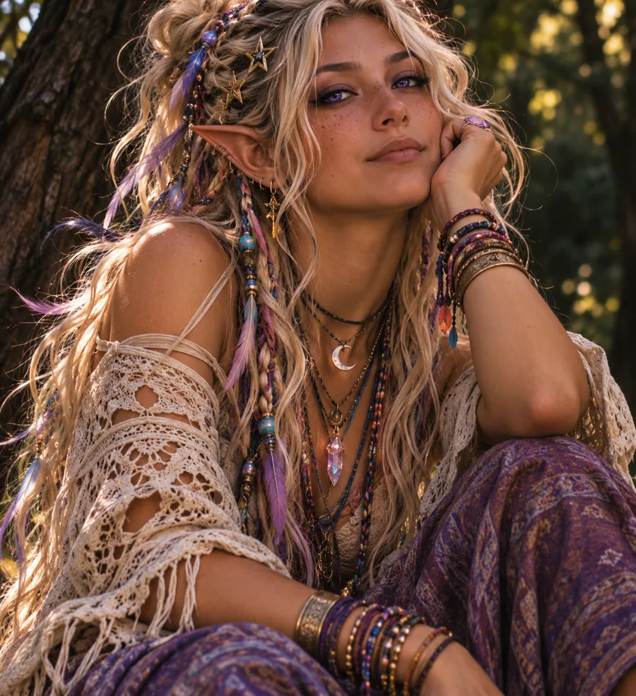
TaylorAn elf whose missing memories are part of the mystery in Elf Blood.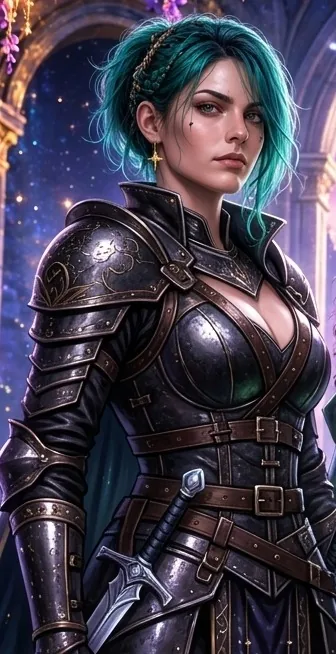
BreniA fiercely loyal vampire who has built a home with Taylor.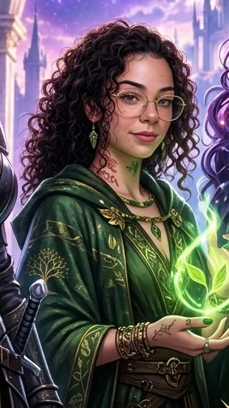
ReylaA Druid whose arrival brings change to the household.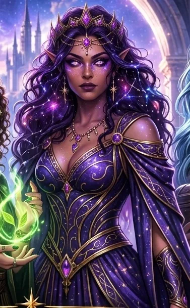
PluOne of the creators connected to the deeper story of this world.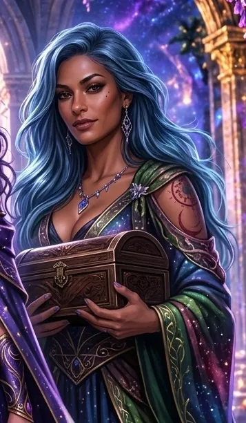
SelenaA goddess and co-creator whose story is closely bound to Plu’s.BEGIN HERE · THE ORIGINAL TRILOGY
An elf without her memories and a fiercely loyal vampire make a home in a world on the verge of change.
Explore Book One See the reading orderFIND ANYTHING IN THE CHRONICLES
Find books, characters, creatures, and places.
Start typing to explore the world.
FIND YOUR WAY INTO THE CHRONICLES
Read the trilogy in order, then explore the companion stories.
Elf Blood introduces the separated world and its people.
The World Before explores creation and the origins of the conflict.
The Goddess Elf completes the main trilogy.
Spoiler note: Dark Rain takes place after Book Three. Read the main trilogy first if you want to preserve its reveals. The Listening World follows Reyla two centuries after Book Three. Both companion stories tell self-contained adventures.
EXPLORE THE UNIVERSE
THE COMPLETE BOOKSHELF
Browse the trilogy, stories that continue afterward and other companion adventures. Post-trilogy books may reveal major plot details.
Retailer availability varies by region.
Start here · Read Books One through Three

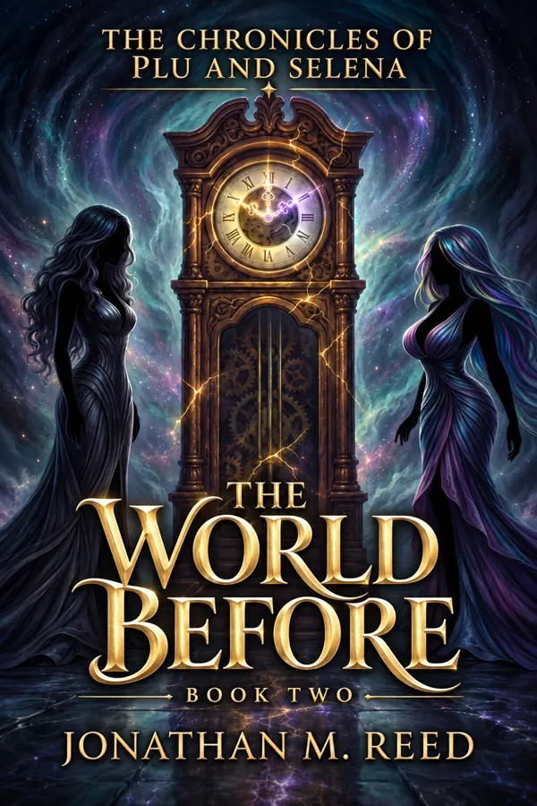
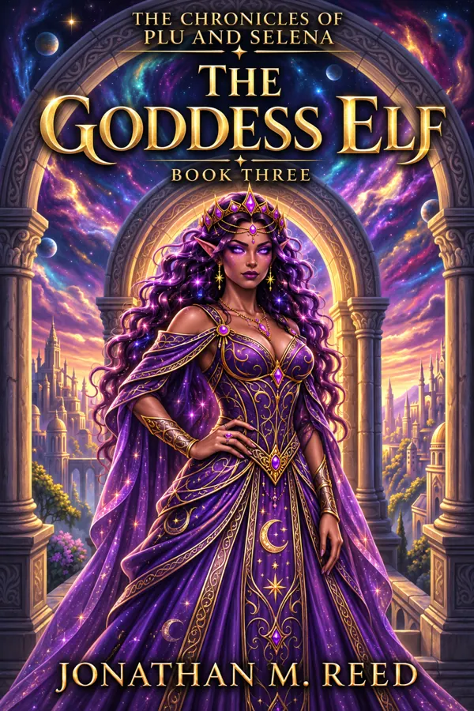
Post-main-story companion · Read after Book Three to avoid spoilers
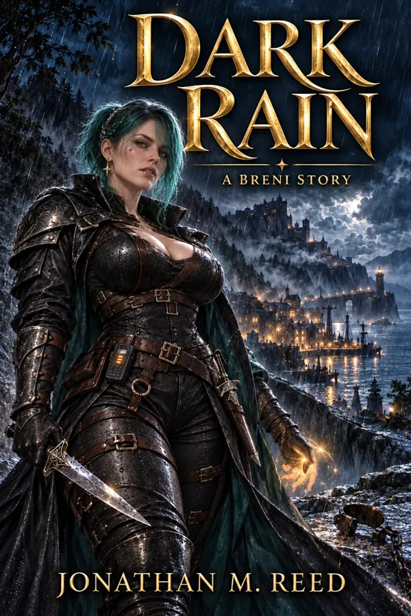
Set two centuries after Book Three · A self-contained journey
THE PUBLICATION CALENDAR
See what Jonathan is working on next.
THE PEOPLE OF THE CHRONICLES
Explore profiles for the principal cast and significant people from the companion stories. Major revelations stay hidden until spoilers are enabled.
THE CHRONICLES · WORLD ART
Explore Shared Moments — Selena, Plu, Reyla & Breni (10 illustrations)
Explore the peoples, places and symbols of the Chronicles. This collection is one part of the wider art archive: character portraits are in the Official Gallery, and full-body race and creature illustrations are presented with their encyclopedia entries and in the Creature Directory.

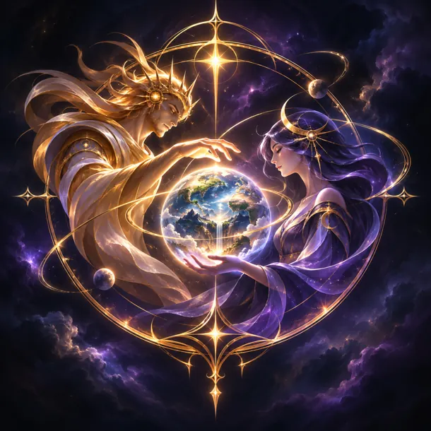
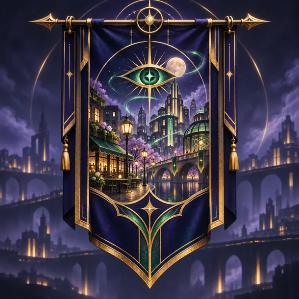
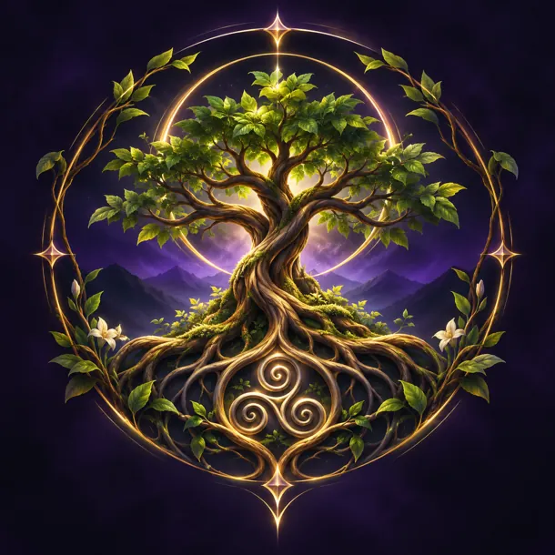
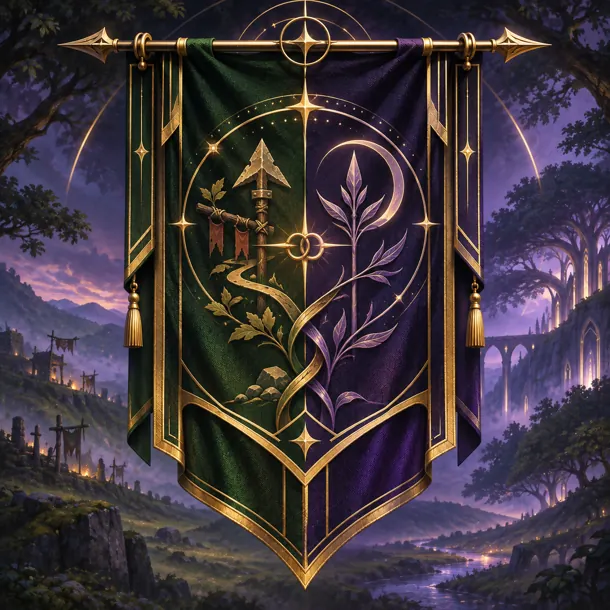
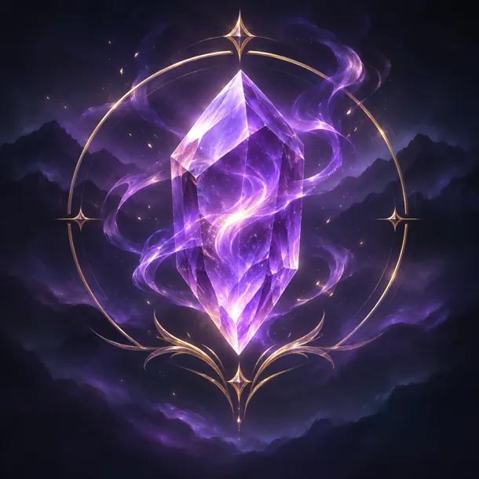
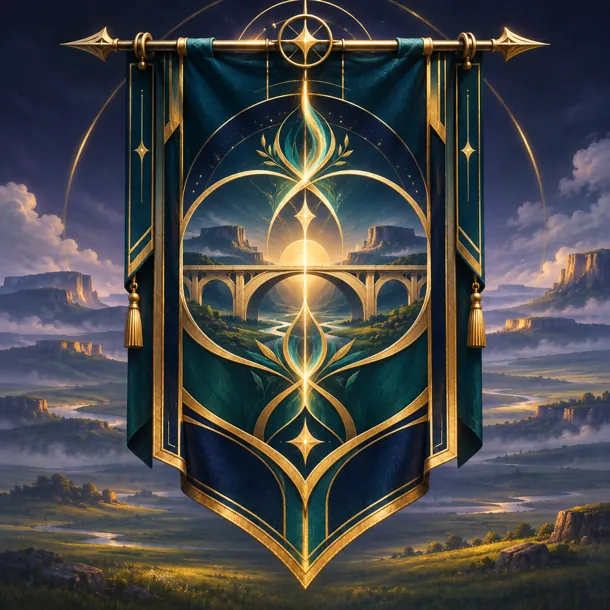
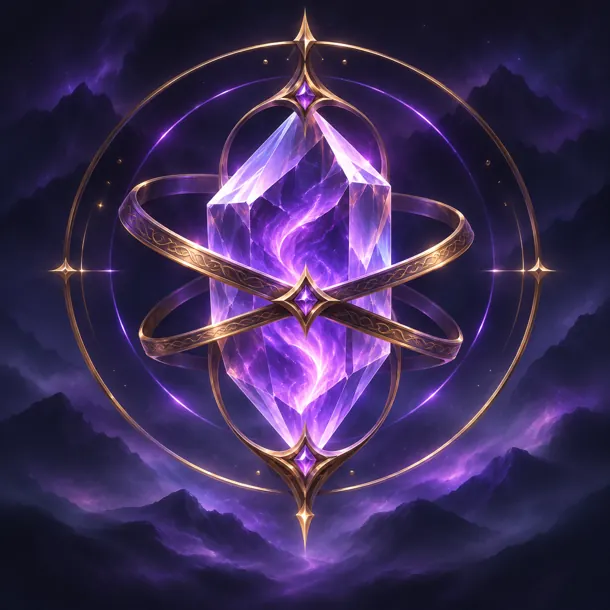
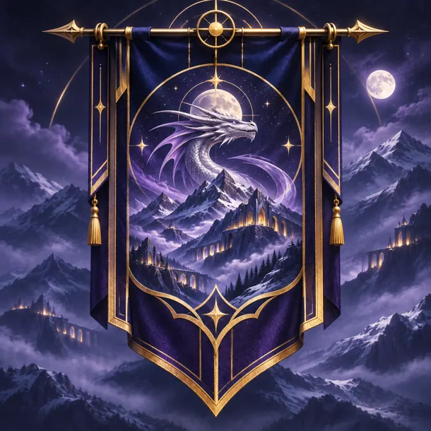
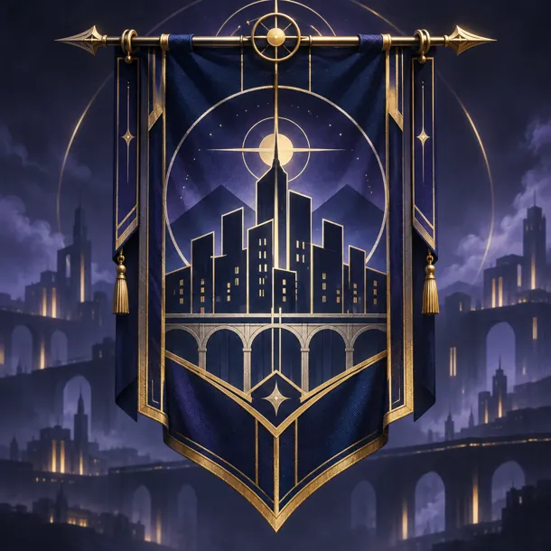
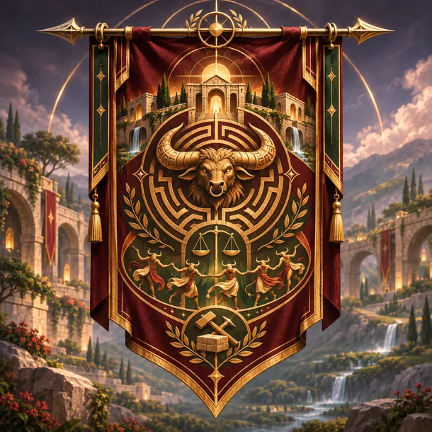


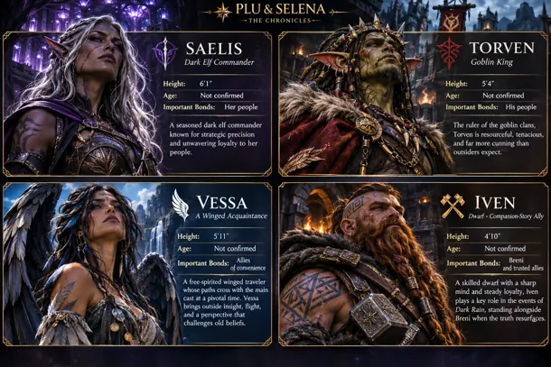
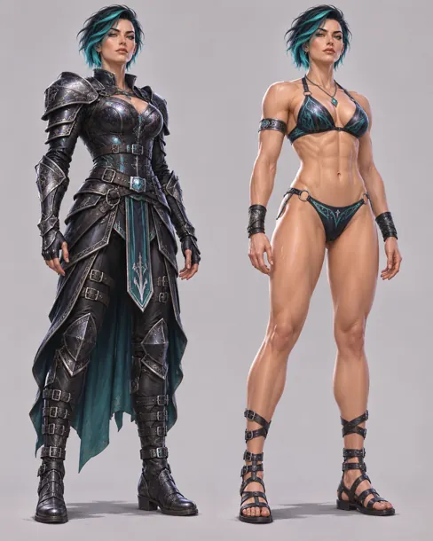
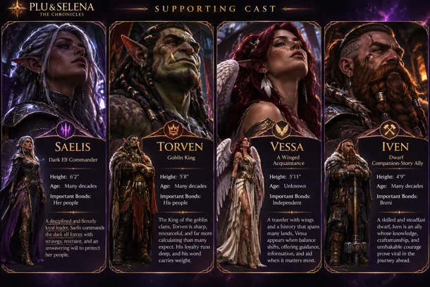

CHARACTER PORTRAIT CONCEPTS
Select a portrait for full-body concept art, a favourite food and an accomplishment.
The artwork is concept art and may change. The books are the definitive source.
Browse the grouped Creature Directory →
PEOPLES & CREATURES
Discover how the World Government classifies the creatures it cannot control, then switch to Plu's very different view. The government files are unreliable in-world records, while Plu's notes are presented in her own words. Current concept artwork and book-reference details remain available.
Two versions of the same world. The Government records only what it can observe or control; anything outside its reach may be declared extinct. Plu remembers something very different.
The Government reports are deliberately unreliable. Plu's entries use the author's own words. Some notes reveal later-book events.BEYOND THE GREAT EVENTS
Even in a world shaped by gods and fractured realities, everyday moments matter. These short glimpses introduce the atmosphere of the companion stories without giving away their endings.
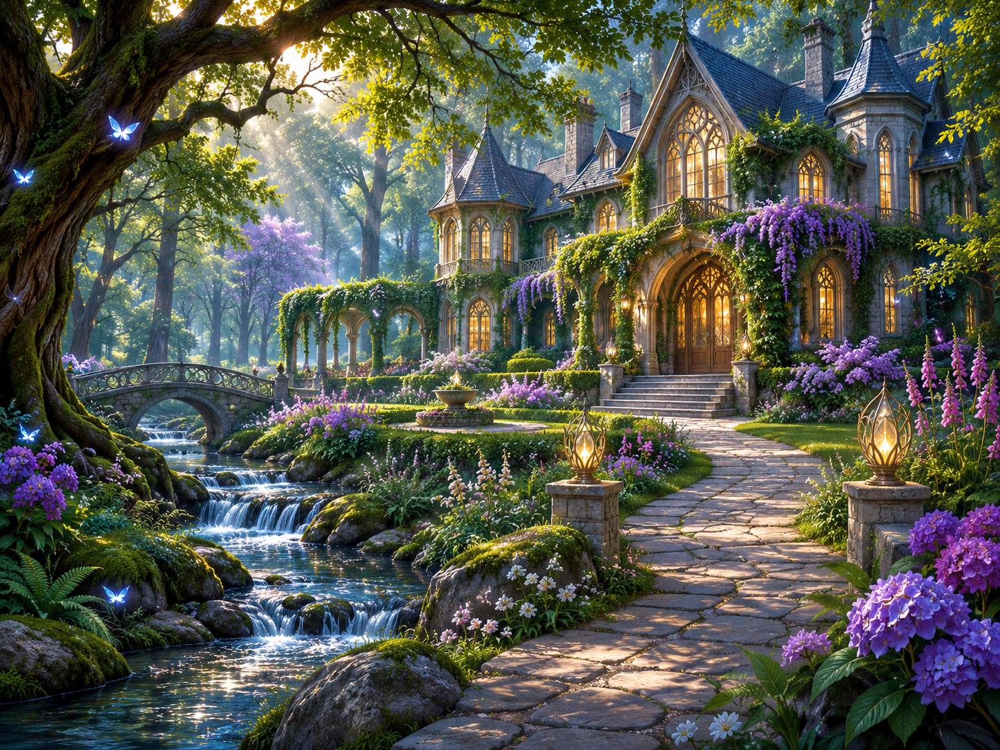
THE MANSION · ELF BLOODFar from the noise of the outside world, Taylor and Breni build a life shaped by quiet mornings, the garden and their care for the people they welcome home.
Explore the reading guide →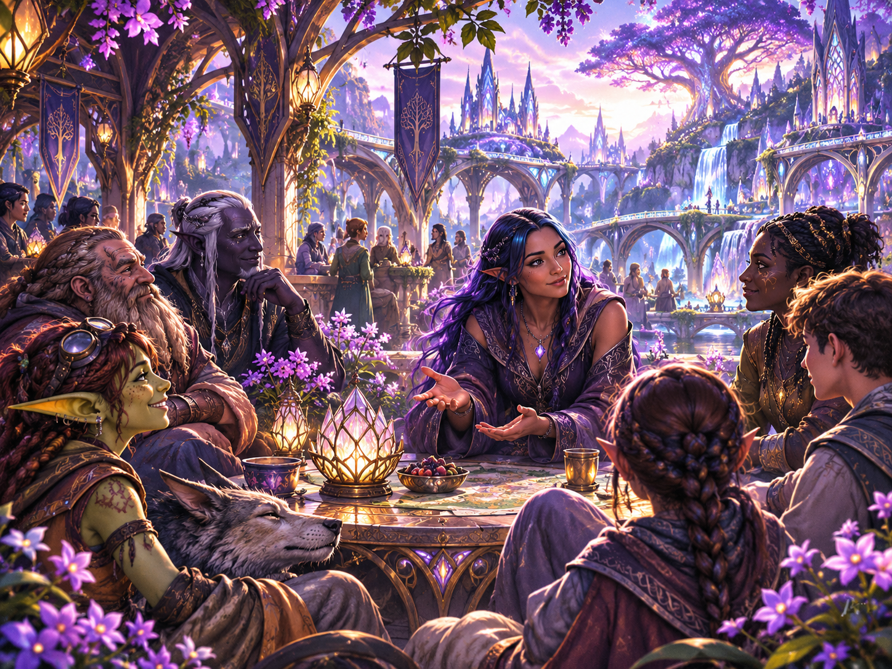
EVERLANGYRS · THE LISTENING WORLDReyla's journey looks beyond a single peace agreement to the patience required when different communities begin building a future together.
Explore Everlangyrs →Selena and Talula's companion story turns toward trust, childhood and the ordinary tenderness that grows alongside extraordinary magic.
Explore companion books →Plu and Selena's lighter adventures spend time with conversations, shared meals, unexpected visitors and the creatures they meet along the way.
Explore companion books →A LIVING ARCHIVE
Discover the magic, places and history that shape the universe.
No entries match your search.
THE CHRONICLES ATLAS
Choose a marker or location to explore the landscape, its communities and the stories set there.

Some adventures take place beyond this world. Enter the portal to learn about Plu’s travels without placing those destinations on the main world map.
TERMS FROM THE WORLD
A short guide to the eras and kinds of magic introduced in the books. Important late-story definitions remain behind the Lore Explorer setting.
THROUGH THE AGES
The public timeline shows only broad eras. Reveal spoilers to explore more.
BONDS THAT SHAPE THE WORLD
Explore relationships across the trilogy. Select two illustrated portraits or use the character menus. Major revelations remain hidden until you turn on spoilers.
Want to discover how these relationships go deeper? Enable Lore Explorer to reveal book spoilers and the secrets behind their connections.
Plu: “Ohhhhh, it’s so good!”
Choose two characters to discover another relationship.
FAMILY & FRIENDSHIP THROUGH THE ERAS
A reading-order journey through the relationships at the heart of the Chronicles. Reveal spoilers for later events.
Before worlds are made, the two creators already share a marriage built on love, trust and the pleasure of being together.
Years of shared routines in the mansion make the two companions a family, even before anyone else joins their household.
When Breni brings Reyla home, the household opens itself to another person and an everyday bond of care grows.
Selena's choices as a mother are seen in daily routines, difficult questions and the journey they make together.
Taylor and Talula's connection brings Plu back, carrying both women's experiences into the life that follows.
Plu and Selena reunite, while Breni, Reyla and the wider family work to protect and heal the world.
As Reyla's relationship with the living world changes, affection and friendship persist beyond their ordinary life together.
More of this story appears when Lore Explorer is enabled. Plu: “Ohhhhh, it’s so good!”
THE CREATOR'S DESK
The official world hub for the trilogy, companion adventures, characters and evolving lore of The Chronicles of Plu and Selena.
Written by Jonathan M. Reed.
I’m building a space for readers to talk about the books without stumbling into spoilers.
Explore the library